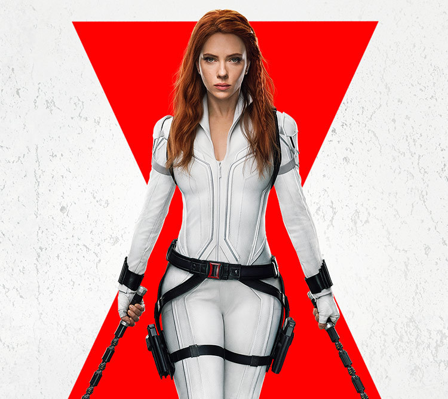
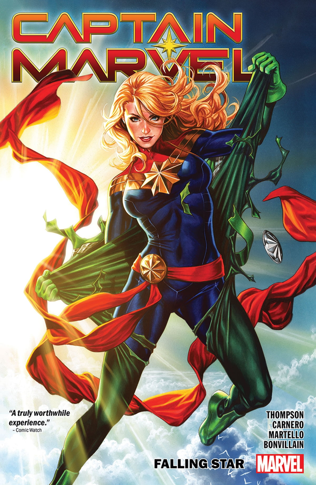
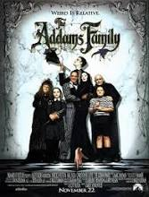

Black Widow
From Scottish crime master Christopher Brookmyre, Black Widow tells the potent story of a woman who thought she was too late for love, the man who falls for her ambition, and the secret selves that are poised, at any moment, to end everything.
Capitan Marvel
Captain Marvel is the story of Carol Danvers, a U.S. Air Force Officer who becomes the superhero Captain Marvel. On Earth, Carol is a hot-shot pilot, but when she's flung deep into space, she joins Starforce, an elite military force of the alien Kree empire.
Adam's Family
When a man (Christopher Lloyd) claiming to be Fester, the missing brother of Gomez Addams (Raul Julia), arrives at the Addams' home, the family is thrilled. However, Morticia (Anjelica Huston) begins to suspect the man is a fraud, since he cannot recall details of Fester's life. With the help of lawyer Tully Alford (Dan Hedaya), Fester manages to get the Addams clan evicted from their home. Gomez realizes the two men are conspiring to swindle the Addams fortune and that he must challenge Fester.
How to Train Your Dragon
Hiccup (Donald Reignoux) is a Norse teenager from the island of Berk, where fighting dragons are a way of life. His progressive views and weird sense of humor make him a misfit, despite the fact that his father (Emmanuel Jacomy) is chief of the clan. Tossed into dragon-fighting school, he endeavors to prove himself as a true Viking. When he befriends an injured dragon he names Toothless, he has the chance to plot a new course for his people's future.
White Chicks
What is the plot to the movie White Chicks? Two FBI agent brothers, Marcus (Marlon Wayans) and Kevin Copeland (Shawn Wayans), accidentally foil a drug bust. As punishment, they are forced to escort a pair of socialites (Anne Dudek, Rochelle Aytes) to the Hamptons, where they're going to be used as bait for a kidnapper. But when the girls realize the FBI's plan, they refuse to go. Left without options, Marcus and Kevin decide to pose as the sisters, transforming themselves from African-American men into a pair of blonde, white women.